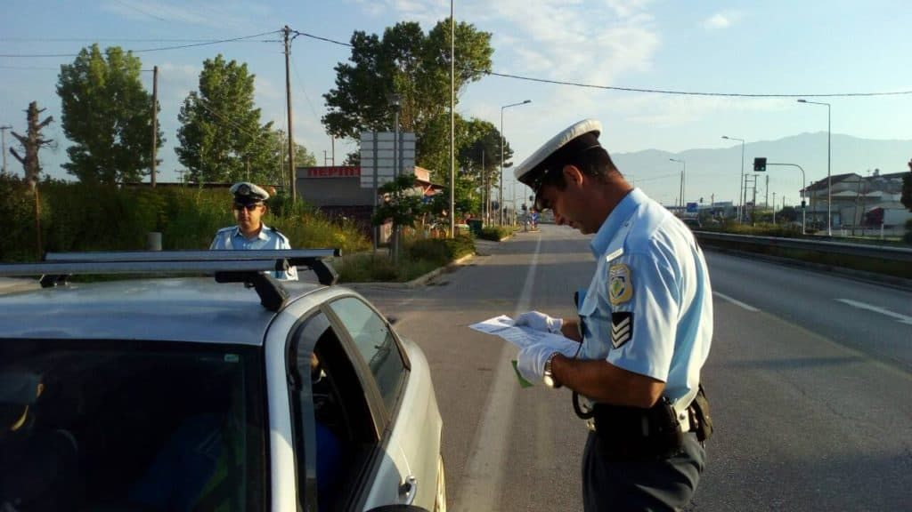

Waarom zie ik geen politie?
Toeristen vragen zich wel eens af waarom er zo weinig politie op straat te zien is. Dat wil niet zeggen dat ze er niet zijn. Veel Griekse politieagenten lopen of rijden in burgerkleding, waardoor je ze niet direct herkent.